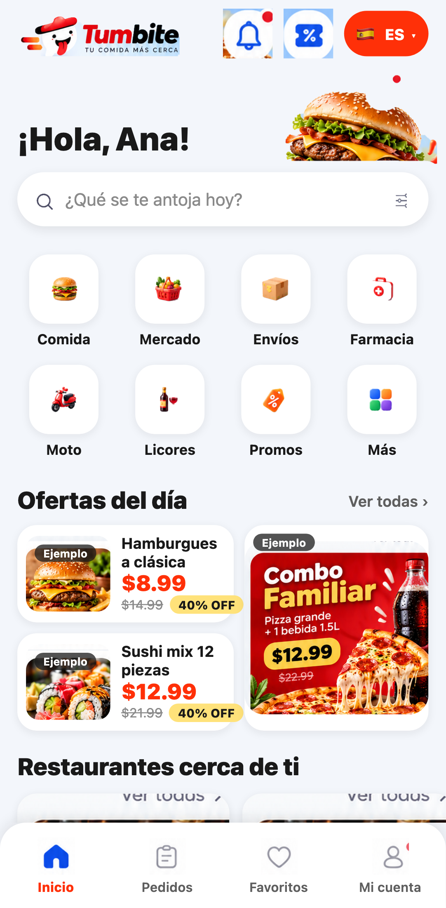
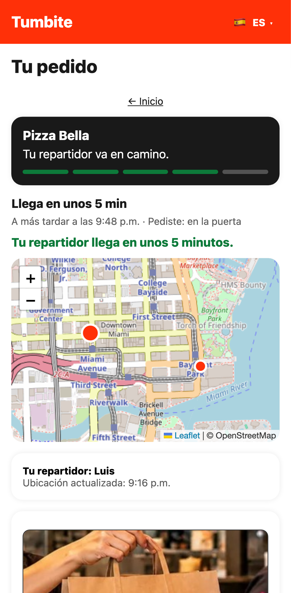
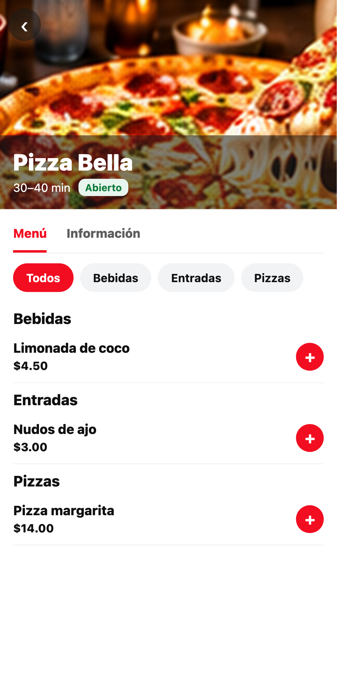
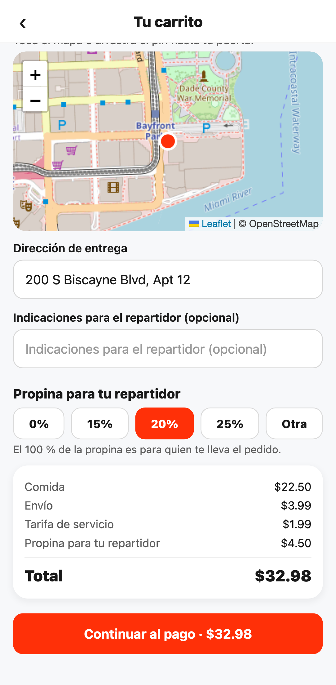
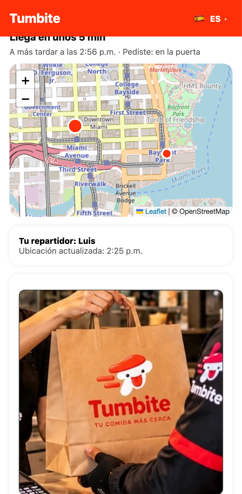
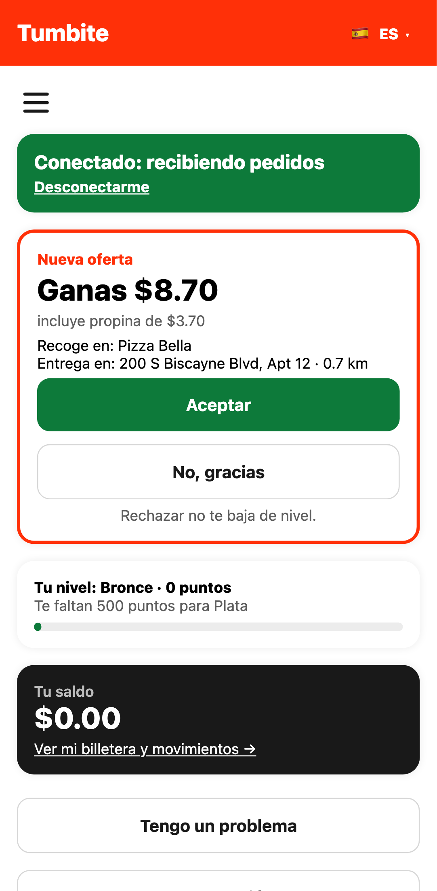
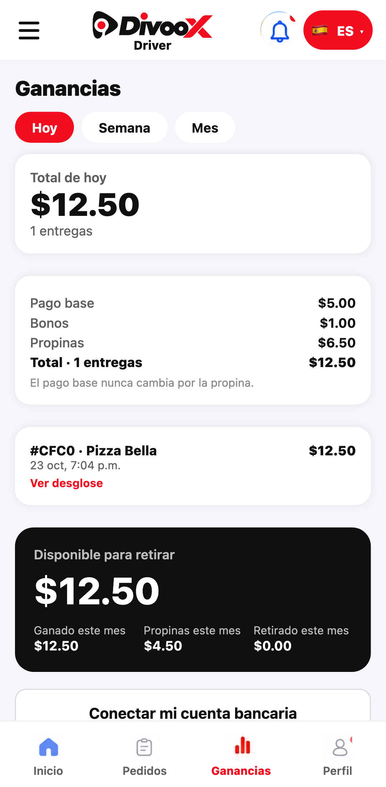
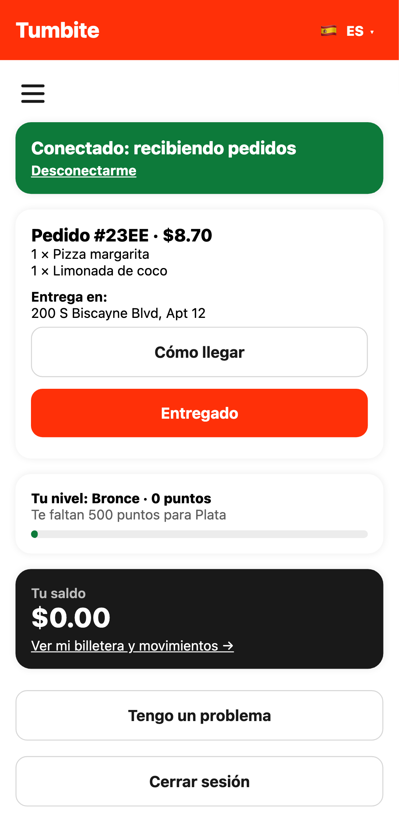
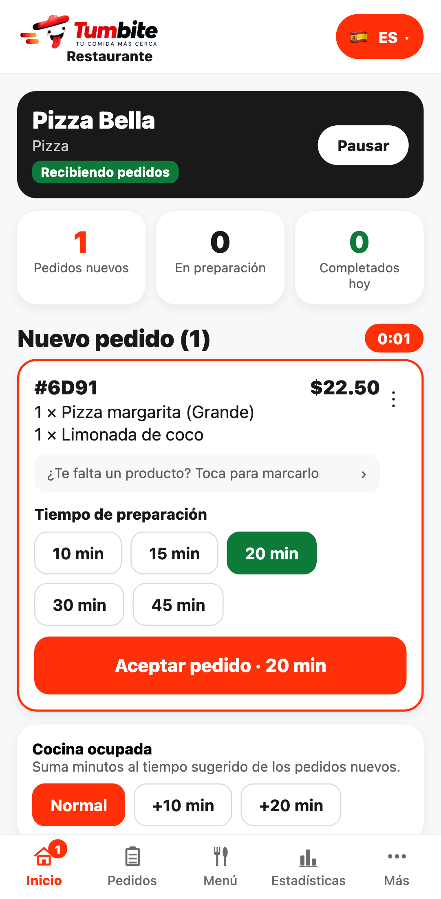

Comida, motos, carros y envíos en una sola app.
Una plataforma de domicilios completa, ya construida y funcionando, con licencia exclusiva para Miami-Dade. Este documento explica qué se compra, cuánto se invierte, cómo se lanza, cuánto deja y cómo recupera su dinero quien invierte.
Preparado por Windoce LLC · 21 de octubre de 2026 · Cifras en dólares de EE. UU.


Miami-Dade tiene 2,8 millones de habitantes, es bilingüe y pide a domicilio todos los días. Los grandes cobran al restaurante entre 25 y 30 % en sus planes más usados. DRIVER'S entra más barato, con una app que ya funciona de punta a punta y un dueño local.
De lo que deja cada pedido (comisión y tarifa de servicio, menos el procesador de pagos y el pago mínimo al repartidor), el 75 % es del dueño local y el 25 % de Windoce, que pone y mantiene la tecnología. El envío y la propina son del repartidor, completos.
Datos de fuentes públicas (lista al final). Donde no hay cifra pública, se dice que es una estimación nuestra.
| Plataforma | Planes |
|---|---|
| DoorDash (Basic, Plus, Premier) | 15 · 25 · 30 % |
| Uber Eats (Lite, Plus, Premium) | 20 · 25 · 30 % |
| DRIVER'S (Básico, Plus, Premium) | 15 · 20 · 25 % |
| Restaurante que vende 10.000 USD al mes en apps | Le quedan |
|---|---|
| Con un plan de 30 % | 7.000 |
| Con DRIVER'S Plus (20 %) | 8.000 |
Comisiones publicadas por DoorDash y Uber Eats para comercios de EE. UU. (20 oct 2026). Uber Eats ofrece 15 % en su plan Lite en algunas ciudades.
Cada servicio tiene su pantalla y se enciende o se apaga desde el panel, sin publicar una app nueva. La tabla dice con honestidad qué funciona hoy y qué se termina antes de encenderlo.
| Servicio | Qué hace | Estado hoy | Cuándo se enciende |
|---|---|---|---|
| Comida | Pedidos con entrega en la puerta o recogida, seguimiento en vivo, foto de entrega, PIN, propina y reseñas | Funciona hoy | Desde el día uno |
| Motos | Viaje en moto con conductor y vehículo verificados y recogida con PIN | Motor del viaje construido (conductores, vehículos, documentos, estados del viaje); falta la pantalla del pasajero | Fase 2, con los permisos y seguros de Florida |
| Carros | Viaje en carro con el mismo motor | Igual que Motos | Fase 2, con los permisos y seguros de Florida |
| Envíos | Paquetes de un punto a otro, con foto y PIN de entrega | Se apoya en el ciclo de entrega que ya funciona; falta la pantalla de pedir un envío | Fase 2 |
| Mercado | Supermercados y tiendas con catálogo | Muy pronto: usa el catálogo y el carrito de Comida | Fase 3 |
| Farmacia | Productos sin receta, con entrega rápida | Muy pronto | Fase 3 |
| Licores | Con verificación de mayoría de edad al entregar | La verificación de edad ya existe | Fase 3, con su licencia |
| Más | Flores, mascotas, tiendas | Muy pronto | Según demanda |
La proyección de este documento solo cuenta Comida. Los demás servicios son ingreso adicional que no está en las cuentas.
Pantallas de la plataforma que ya funciona hoy. Llevan la marca de demostración actual; al entregar, las apps salen con la marca DRIVER'S.



El repartidor ve cuánto gana antes de aceptar; el restaurante recibe el pedido con alarma y ve su dinero del día. Todo en inglés y en español.




El cliente paga la comida, el envío, la tarifa de servicio y la propina. El repartidor se lleva el envío, la propina y lo que falte para su pago mínimo. La plataforma vive de la comisión y la tarifa de servicio.
| Concepto | Básico 15 % | Plus 20 % | Premium 25 % |
|---|---|---|---|
| Comisión del restaurante | 4,50 | 6,00 | 7,50 |
| Tarifa de servicio (5 %, mínimo 1,99) | 1,99 | 1,99 | 1,99 |
| Completar el pago mínimo del repartidor (5,00) | −1,01 | −1,01 | −1,01 |
| Procesador de pagos (2,9 % + 0,30 sobre 39,98) | −1,46 | −1,46 | −1,46 |
| Margen por pedido | 4,02 | 5,52 | 7,02 |
| Dueño local (75 %) | 3,01 | 4,14 | 5,26 |
| Windoce (25 %) | 1,00 | 1,38 | 1,75 |
El cliente paga 39,98: comida 30, envío 3,99, servicio 1,99 y propina 4. El repartidor recibe 9,00. Impuesto de ventas aparte. Tarifa estándar del procesador para tarjetas de EE. UU.
Se supone que la mitad de los restaurantes elige Básico, un 35 % Plus y un 15 % Premium. El margen promedio queda en 4,99 dólares por pedido.
Los tres primeros meses de operación, los primeros restaurantes pagan 0 % de comisión: en esos meses cada pedido deja una pérdida pequeña (−0,48), que ya está en las cuentas.
Además se descuentan 0,30 por pedido, siempre, para cupones y bonos.
Ingresos que no están en estas cuentas: membresía con envío gratis, restaurantes destacados, viajes en moto y en carro, envíos, mercado y farmacia.
Una app de domicilios necesita a la vez restaurantes, repartidores y clientes. Por eso abre por zonas, y cada zona abre cuando tiene oferta suficiente.
El capital no se gasta de golpe: 40 % para la preparación (meses 1 a 3); 35 % al abrir, si hay 300 restaurantes y 500 repartidores listos; 25 % en el mes 7, si la primera zona cumple su meta de pedidos. Si una meta no se cumple, se corrige antes de gastar más.
El capital cubre la licencia y los meses en que el negocio todavía no se paga solo. En el escenario base, la caja toca fondo en el mes 10 y desde ahí la utilidad la va reponiendo.
| Uso (meses 1 a 10, escenario base) | Dólares |
|---|---|
| Equipo de la ciudad | 539.000 USD |
| Publicidad de lanzamiento | 860.000 USD |
| Incentivos a repartidores y descuentos a clientes | 321.687 USD |
| Tablets, kits, abogado, permisos y seguros iniciales | 170.000 USD |
| Seguro comercial, oficina y herramientas | 60.000 USD |
| Menos lo que dejan los pedidos de esos meses | −472.006 USD |
| Reserva para imprevistos (10 %) | 151.319 USD |
| Capital del lanzamiento | 1.630.000 USD |
| Licencia de la plataforma (Miami-Dade, 10 años) | 120.000 USD |
| Inversión total | 1.750.000 USD |
Estimaciones nuestras: se confirman al cotizar en Miami antes de firmar.
Utilidad del dueño local después de su equipo, su publicidad y la parte de Windoce. Tres escenarios: el base llega a unos 74.360 pedidos al mes en el mes 24 (por ejemplo, 600 restaurantes con unos 4 pedidos al día cada uno).
| Escenario | Año 1 | Año 2 | Año 3 | Año 4 | Recupera |
|---|---|---|---|---|---|
| Conservador | -1.816.195 USD | -129.964 USD | 207.107 USD | 412.473 USD | después del mes 48 |
| Base | -1.460.453 USD | 1.081.376 USD | 1.634.281 USD | 1.881.828 USD | mes 28 |
| Optimista | -986.465 USD | 2.589.335 USD | 3.314.170 USD | 3.568.629 USD | mes 18 |
| Escenario | Año 1 | Año 2 | Año 3 | Año 4 | |
|---|---|---|---|---|---|
| Conservador | 135.038 | 418.892 | 551.665 | 611.321 | |
| Base | 263.569 | 770.770 | 966.240 | 1.038.149 | |
| Optimista | 436.470 | 1.208.812 | 1.454.225 | 1.528.142 |
| Escenario | Año 1 | Año 2 | Año 3 | Año 4 | |
|---|---|---|---|---|---|
| Base | 277.753 USD | 961.536 USD | 1.205.384 USD | 1.295.091 USD |
Empieza en menos la licencia, baja durante el arranque (lo cubre el capital de los socios) y sube con la utilidad de cada mes. En el mes 28 vuelve a cero: los socios ya recuperaron todo lo que pusieron. Desde ahí, todo es utilidad.
En el conservador, el capital no se recupera en estos cuatro años: por eso el capital sale por metas y se corrige a tiempo.
Los inversionistas son dueños de la empresa de Miami. Windoce no pide acciones: gana con la licencia y con su 25 % del margen.
Se crea DRIVER'S Miami LLC. Los socios aportan el capital y reciben su parte en proporción. Con 1,75 millones de USD en total, un aporte de 100.000 dólares equivale a cerca del 5,7 % de la empresa.
Al firmar: la licencia y el 40 % del capital. Al abrir la primera zona: el 35 %. En el mes 7, con la meta cumplida: el último 25 %.
Mientras los socios no recuperen su aporte, toda la utilidad va primero a devolverles el capital, en proporción. Después, la utilidad se reparte por participación o se reinvierte, según decidan los socios.
| Momento | Qué pasa | Para el socio |
|---|---|---|
| Meses 1 a 6 | Se prepara la ciudad y se abre por zonas | aporta 100.000 USD |
| Hasta el mes 28 | La utilidad devuelve el capital a todos los socios | recupera los 100.000 USD |
| Año 3 | Utilidad de la empresa: 1.634.281 USD | ≈ 93.387 USD |
| Año 4 | Utilidad de la empresa: 1.881.828 USD | ≈ 107.533 USD |
| Al mes 48 | Recuperado el capital, lo ganado por encima | ≈ 172.402 USD |
Cálculo proporcional y antes de impuestos. La empresa también vale más con el tiempo: una operación que deja utilidad se puede vender o ampliar a otras ciudades de Florida.
| Territorio | Miami-Dade, con exclusividad. Broward y Palm Beach se pueden sumar. |
| Licencia | 120.000 USD, en dos pagos: firma y apertura. |
| Reparto del margen | 75 % dueño local, 25 % Windoce, liquidado cada mes. |
| Duración | 10 años, renovables por 5. |
| Metas para conservar la exclusividad | 500 restaurantes activos al mes 12 y 50.000 pedidos al mes al mes 24. |
Siguientes pasos: 1. Reunión para revisar los supuestos. 2. Carta de intención con la exclusividad reservada por 60 días. 3. Contrato y creación de la LLC. 4. Arranca el mes 1.